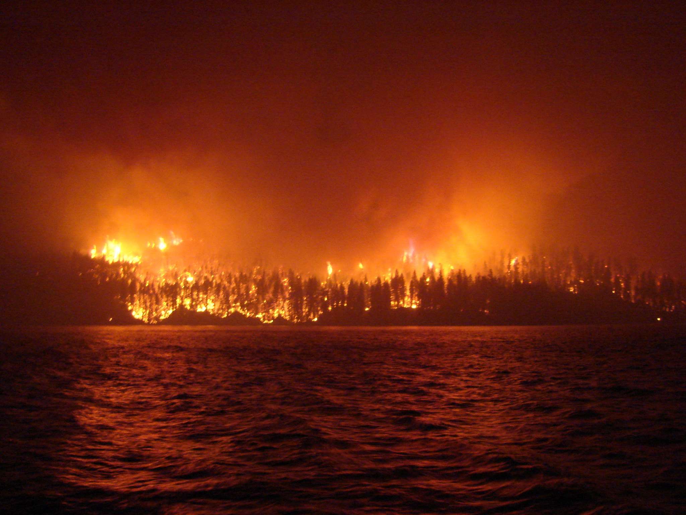
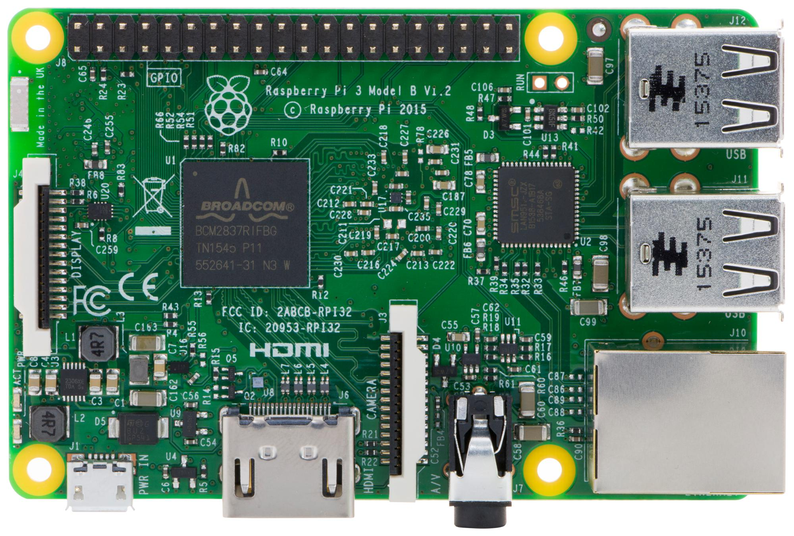

As I started on my investigation for this year's LCCS brief, I had to decide which real-world process I wanted to simulate, and Wildfire Risk was a real-world process that stood out to me.
Wildfire Risk

Photo of a Wildfire in Ashcroft Reserve from Look Lake, Ashcroft Reserve, British Columbia, Canada
Wildfires are a major weather event that has a strong impact on many countries worldwide. I recalled an instance during 4th year, where my friend was in Canada and got a wildfire warning on his phone. This system interested me, but because of the brief, I thought more about the early detection of wildfires, and how people calculate fire risk.

Cover to the FWI CIFFC Training Manual, ISBN 0-7785-0076-4
I learnt about the Canadian Forest Fire Weather Index (FWI), originally developed by C.E. Van Wagner and T.L. Pickett in 1985 as a mathematical program for calculating Fire Risk using Temperature, Humidity, Windspeed and Rainfall. The documentation and original FORTRAN source code is well documented, though I mainly read the equations for information into how this system works overall.
My overall opinion on the CFFWI is very positive, and for that reason, I wanted to make the python simulation model and embedded system with this system in mind throughout.
Embedded-System Definition
Before planning my embedded system, I decided to read into the official LCCS Brief further to find the explicit regulations for what our embedded system had to be.
As per this year's official SEC guidelines, an “Embedded System” must:
- Have at least one digital input and at least one analogue input.
- Generate at least one primary output which can be either digital or analogue
- Be started or calibrated manually but should operate automatically once started.
- Be started or calibrated manually but should operate automatically once started.
- Collect and store environmental data that relates to your chosen theme.
- Run tests to show how the system responds using different inputs or changing environmental data.
- For AR3, include a feedback mechanism that enables it to adapt automatically to changing conditions (Note that the adaptive response can be either physical or virtual)
From these guidelines, I can confidently say that the Raspberry Pi 3 Model B is a suitable embedded system for this project

Considering that the microbit was made for children aged 8-14 (me being one of them in 2015), I decided that the Raspberry Pi would be a better embedded system solely due to its familiarity (I have used the Raspberry Pi since 2018) and because I would find the microbit too simple, therefore leaving me disappointed.